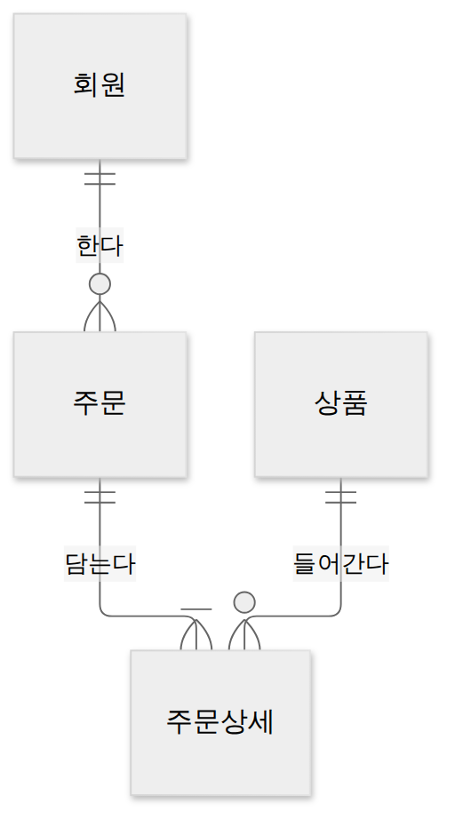
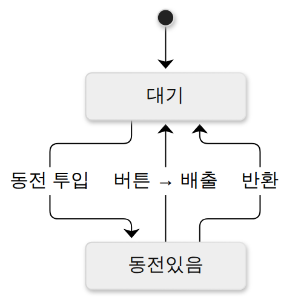

D041 · 한 주 SQL 다시 꿰기 — 샛별마켓 주문 DB로 DDL·DML·조회·조인·뷰·인덱스·절차형까지
B1 B2 일요일 종합 복습이에요. 이번 주 D035~D038에서 SQL을 조각조각 배웠다면, 오늘은 새벽배송 마켓 ‘샛별마켓’의 주문 DB 하나를 처음부터 끝까지 만들어 보며 그 조각을 한 줄로 꿰어요. 새벽 6시 문 앞에 놓인 우유 한 팩에도 INSERT 한 번, SELECT 몇 번, 어쩌면 트리거 하나가 숨어 있어요.
- SQL 문장을 보고 결과 행을 손으로 구할 수 있다 — NULL 비교, WHERE vs HAVING, 순위 함수, 조인 종류, IN/EXISTS, UNION vs UNION ALL
- 뷰(가상 테이블 · 독자 인덱스 불가 · ALTER 불가)와 인덱스(CREATE/DROP INDEX · B-트리 · 클러스터드)의 틀린 설명을 골라낼 수 있다
- 프로시저 · 함수 · 트리거를 “누가 · 어디서 부르나, 값을 돌려주나”로 구별할 수 있다
- 상태 패턴과 전략 패턴을 “누가 갈아 끼우나?” 한 질문으로 구별할 수 있다
1부 (약 19분)
2부 (약 23분)
0. 기본 전제와 용어
사례 DB는 회원 6명, 상품 6개, 주문 7건, 주문상세 10줄의 아주 작은 표예요. 작게 만든 이유는 결과 행을 손으로 세어 볼 수 있게 하려는 것이고, 시험의 손풀이 문제도 딱 이 정도 크기로 나와요. 일부러 “빈 곳”을 심어 두었어요 — 전화번호가 없는 회원(나래 · 라온), 주문을 한 번도 안 한 회원(라온 · 바다), 한 번도 안 팔린 상품(두부). 오늘 NULL · 외부 조인 · NOT EXISTS · EXCEPT 장면은 모두 이 빈 곳에서 벌어져요.
| 표 | 열(굵게 = 기본키) | 들어 있는 값 |
|---|---|---|
| 회원 | 회원번호, 이름, 등급, 전화 | 1 가온 골드 · 2 나래 골드(전화 NULL) · 3 다솜 실버 · 4 라온 실버(전화 NULL) · 5 마루 브론즈 · 6 바다 브론즈 |
| 상품 | 상품번호, 상품명, 분류, 가격 | P1 우유 2500 · P2 요거트 1800 · P3 사과 7000 · P4 딸기 12000 · P5 식빵 4500 · P6 두부 3000 |
| 주문 | 주문번호, 회원번호, 주문일 | O1 가온 11/1 · O2 가온 11/3 · O3 나래 11/3 · O4~O6 다솜 11/5 · 7 · 9 · O7 마루 11/10 |
| 주문상세 | 주문번호, 상품번호, 수량 | 주문 한 건에 담긴 상품 줄. 10줄(O1 = 우유 2 + 사과 1 …) |
| 용어 | 뜻 | 샛별마켓 예 |
|---|---|---|
| 행(튜플) · 열(속성) | 표의 가로 한 줄 · 세로 한 칸 | 회원 표 = 6행 4열 |
| 기본키(PK) | 행 하나를 딱 집어내는 열 | 회원번호 |
| 외래키(FK) | 다른 표의 기본키를 가리키는 열 | 주문.회원번호 → 회원.회원번호 |
| NULL | 값이 “없음 · 모름”. 0이나 빈 문자열과 다름 | 나래의 전화 |
| 결과 집합 | SELECT가 돌려주는 임시 표 | “전화 없는 회원” = 2행 |
1. 개념 지도 — 한 DB에 매달린 일곱 장면
지난 6일 동안 DML, 집계, 조인, 서브쿼리, 뷰, 절차형 SQL을 하루씩 따로 배웠어요. 따로 배우면 각각은 알겠는데 “그래서 이게 언제 쓰이지?”가 흐려져요. 오늘은 장면 순서가 곧 실제 개발 순서가 되도록 배치했어요. 아래 지도에서 위쪽 파랑은 데이터를 만드는 일, 가운데 초록은 꺼내 보는 일, 아래 보라는 DB 안에 저장해 두는 일이에요.
그림 2는 네 표의 관계예요. 회원 한 명이 주문을 여러 건 하고, 주문 한 건에 상품 여러 줄이 담겨요. 이 ‘하나 대 여럿’ 관계 때문에 조인하면 행이 불어나고, 짝이 없는 쪽(주문 0건 회원, 판매 0줄 상품)이 생겨요.

장면 1 — 표를 만든다 (DDL · 데이터 타입 · 참조 동작)
데이터를 넣으려면 먼저 그릇이 있어야 해요. 표의 구조를 만들고 · 바꾸고 · 지우는 명령이 DDL(CREATE · ALTER · DROP · TRUNCATE)이고, 오늘 실행 상자가 시작할 때 몰래 도는 위의 CREATE TABLE 네 줄이 바로 그거예요. 장면 2의 DML, 권한을 다루는 DCL과 경계를 헷갈리는 선지가 단골이라 표로 한 번 정리해 둘게요.
| 분류 | 하는 일 | 명령 |
|---|---|---|
| DDL (정의어) | 그릇(구조) 만들기 · 바꾸기 · 지우기 | CREATE · ALTER · DROP · TRUNCATE |
| DML (조작어) | 그릇 안의 데이터 다루기 | SELECT · INSERT · UPDATE · DELETE |
| DCL (제어어) | 권한 · 보안 · 트랜잭션 제어 | GRANT · REVOKE (+ COMMIT · ROLLBACK, 교재에 따라 TCL로 분리) |
데이터 타입 — 열에 무엇을 담을지
정의: 데이터 타입은 열에 담을 값의 종류와 크기를 정하는 약속이에요. 타입이 없다면 가격 칸에 “비쌈”이 들어가도 막을 방법이 없고, 날짜끼리 빼서 며칠 지났는지 계산할 수도 없어요. 문자는 CHAR(n)(고정 길이 — 짧은 값도 n칸을 공백으로 채움)와 VARCHAR(n)(가변 길이 — 넣은 만큼만 차지), 숫자는 NUMBER(Oracle) · INT · NUMERIC, 날짜는 DATE를 써요.
샛별마켓은 상품번호처럼 길이가 늘 두 글자로 똑같은 값에 CHAR(2)를, 이름처럼 길이가 들쭉날쭉한 값에 VARCHAR를 줬어요. 길이가 고정이면 CHAR가 단순하고, 들쭉날쭉하면 VARCHAR가 공간을 아껴요. 이사 박스로 치면 CHAR는 “무조건 5호 박스”, VARCHAR는 “물건 크기에 맞춰 접는 박스”예요.
참조 동작 — 부모 행이 사라지면 자식은?
정의: 외래키에 붙이는 참조 동작(ON DELETE …)은 “가리키던 부모 행이 지워질 때 자식 행을 어떻게 할지”를 정해요. CASCADE는 자식도 같이 삭제, RESTRICT(NO ACTION)는 자식이 있으면 부모 삭제를 거부, SET NULL은 자식의 외래키를 NULL로, SET DEFAULT는 기본값으로 바꿔요. 아래 상자는 회원에게 발급한 쿠폰 표를 만들고, 라온이 탈퇴하면 쿠폰은 남기되 주인 칸만 비우는(SET NULL) 장면이에요.
→ 이 장면의 결과물: 타입과 제약이 정해진 빈 표 네 개. 그래서 다음 장면은 이 그릇에 데이터를 넣고 고치는 일이에요.
장면 2 — 데이터를 넣고 고친다 (INSERT · UPDATE · DELETE · DCL) 기출 20회
표가 생겼으니 이제 채울 차례예요. 장면 1 표의 DML 분류대로 데이터를 다루는 명령은 네 개뿐이고, 그중 INSERT는 행을 넣는 명령으로, INSERT INTO 표 VALUES (…)로 한 행씩 넣거나 INSERT INTO 표 SELECT …로 다른 질의 결과를 한꺼번에 넣어요. 모든 열에 순서대로 값을 줄 때만 열 목록을 생략할 수 있어요. 아래는 신규 회원 새봄이 가입하자마자 첫 주문을 넣는 장면인데, 두 번째 INSERT는 회원번호를 직접 쓰지 않고 SELECT로 찾아서 넣어요.
UPDATE는 이미 있는 행의 값을 고쳐요. 문법은 UPDATE … SET … WHERE 순서, 즉 UPDATE 표 SET 열 = 값 WHERE 조건이고, SET 뒤에 계산식을 써도 돼요. 과일 10% 할인 행사를 하면 아래처럼 한 줄이면 끝나요. WHERE를 빼먹으면 우유 · 두부까지 전부 할인돼서, 정산 담당자가 월요일 아침에 조용히 찾아와요.
DELETE는 행을 지워요. DELETE FROM 표 WHERE 조건이고, WHERE가 없으면 모든 행이 지워지지만 표 구조는 남아요. 구조까지 없애는 건 DDL인 DROP TABLE이에요. 또 DELETE는 DML이라 트랜잭션 안에서 ROLLBACK으로 되돌릴 수 있어요. 아래 상자에서 주문상세를 몽땅 지운 뒤 되돌려 보면, “전부 아니면 전무”라는 트랜잭션의 원자성이 눈에 보여요. 트랜잭션 정의를 다시 떠올리면, 모두 실행되거나 모두 취소되어야 하는 하나의 논리적 작업 단위예요(ACID는 D031).
DCL 분류와 기능부터 보면, DCL은 누가 무엇을 할 수 있는지 정해 보안 · 무결성 · 병행 제어 · 회복을 돕는 언어예요. 권한은 GRANT … ON … TO 꼴(GRANT 권한 ON 객체 TO 사용자)로 주고, REVOKE … ON … FROM 꼴(REVOKE 권한 ON 객체 FROM 사용자)로 회수해요(주는 건 TO, 뺏는 건 FROM). WITH GRANT OPTION을 붙여 주면 받은 사람이 그 권한을 남에게 다시 줄 수 있고, 회수할 때 CASCADE를 붙이면 그 사람이 다시 나눠 준 권한까지 연쇄로 회수돼요. 사람마다 일일이 주기 번거로우면 권한 묶음인 ROLE을 만들어 한 번에 줘요.
GRANT SELECT, UPDATE ON 상품 TO 김매니저 WITH GRANT OPTION;
REVOKE UPDATE ON 상품 FROM 김매니저 CASCADE;
CREATE ROLE 배송팀; GRANT SELECT ON 주문 TO 배송팀; GRANT 배송팀 TO 이기사;→ 이 장면의 결과물: 회원 · 상품 · 주문이 채워진 DB와 권한 설정. 그래서 다음 장면은 이 데이터에서 원하는 행만 골라내는 일이에요.
장면 3 — 조건으로 가려 본다 (SELECT · WHERE · NULL · 처리 순서) 기출 18회
데이터가 쌓이면 “전화 없는 회원에게 문자 대신 앱 알림을 보내자” 같은 요구가 생겨요. SELECT 기본 구조는 FROM(어느 표에서) · WHERE(어떤 행을) · SELECT(어떤 열을)의 세 절이고, 이 세 절로 원하는 조각을 꺼내요. 그런데 전화 없는 회원을 찾으려고 전화 = NULL이라고 쓰면, 오류도 안 나고 결과가 0행으로 조용히 끝나요.
왜 그럴까요? NULL은 ‘모르는 값’이라서 NULL과 무엇을 비교하든 결과는 참도 거짓도 아닌 UNKNOWN(알 수 없음)이에요. “모름 = 모름”도 모르는 거예요. WHERE는 참인 행만 통과시키니 0행이 돼요. 그래서 SQL은 NULL 전용 연산자 IS NULL · IS NOT NULL을 따로 둬요.
NULL 규칙은 집계 함수에도 이어져요. COUNT(*)는 행 자체를 세고, COUNT(열)은 그 열이 NULL이 아닌 행만 세요. SUM · AVG · MAX · MIN도 NULL을 건너뛰어요. COUNT(DISTINCT 열)은 중복을 뺀 개수예요.
| 비교 | 값이 있을 때 | 값이 NULL일 때 |
|---|---|---|
| 전화 = '010-1111' | 참 또는 거짓 | UNKNOWN → 탈락 |
| 전화 = NULL | UNKNOWN → 탈락 | UNKNOWN → 탈락 |
| 전화 IS NULL | 거짓 | 참 |
| NOT (UNKNOWN) | — | 여전히 UNKNOWN |
WHERE에서 쓰는 연산자들
BETWEEN 연산자(BETWEEN a AND b)는 a 이상 b 이하로, 양 끝을 포함해요. IN 연산자(IN (목록))는 목록 중 하나와 같으면 참이고 OR를 여러 번 쓴 것과 같아요. LIKE와 와일드카드는 문자열 패턴 검색으로, %는 0글자 이상, _는 정확히 1글자예요. 아래 상자에서 2500과 7000이 결과에 들어가는지, _거%가 “두 번째 글자가 거”라는 뜻인지 확인해 보세요.
세 가지 AND · OR · NOT 논리 연산자는 NOT → AND → OR 순서로 먼저 계산해요. 괄호를 안 치면 “과일이 아니면서 2000원 넘는 것, 또는 딸기”로 읽혀요. 결과에 과일인 딸기가 끼어 있으면 우선순위 때문이에요.
DISTINCT는 SELECT 절에 써서 결과의 중복 행을 없애고, ORDER BY는 결과를 정렬해요(기본 ASC 오름차순, DESC 내림차순, 여러 열이면 앞 열부터). 둘 다 WHERE가 아니라 SELECT 쪽 일이라는 점이 함정 포인트예요. 그래서 “중복을 없애려면 WHERE 절에 DISTINCT를 쓴다”는 문장은 틀린 설명이에요.
절 처리 순서
정의: SQL은 쓰는 순서(SELECT → FROM → WHERE …)와 DB가 처리하는 순서(FROM → WHERE → GROUP BY → HAVING → SELECT → ORDER BY)가 달라요. 사람에게 읽기 좋은 순서로 쓰게 하고, 처리는 “표를 가져와 → 거르고 → 묶고 → 고르고 → 정렬”하는 공장 라인 순서로 하는 거예요. 이 차이 하나로 “WHERE에서 별칭을 못 쓴다”, “WHERE에 집계 함수를 못 쓴다”가 한꺼번에 설명돼요.
아래 움직이는 그림에서 같은 질의가 공장 라인을 지나가는 모습을 한 단계씩 보세요. 특히 ②의 WHERE가 ④의 HAVING 결과를 바꿔 놓는 장면이 핵심이에요.
SELECT 회원번호, COUNT(*) AS 건
FROM 주문
WHERE 주문일 >= '2026-11-03'
GROUP BY 회원번호
HAVING COUNT(*) >= 2
ORDER BY 건 DESC;| 주문번호 | 회원번호 | 주문일 |
|---|---|---|
| O1 | 1 | 11-01 |
| O2 | 1 | 11-03 |
| O3 | 2 | 11-03 |
| O4 | 3 | 11-05 |
| O5 | 3 | 11-07 |
| O6 | 3 | 11-09 |
| O7 | 5 | 11-10 |
① FROM — 먼저 주문 표 7행을 통째로 가져와요. 쿼리 맨 앞에 쓴 SELECT는 아직 아무 일도 안 해요.
| 주문번호 | 회원번호 | 주문일 |
|---|---|---|
| O1 | 1 | 11-01 |
| O2 | 1 | 11-03 |
| O3 | 2 | 11-03 |
| O4 | 3 | 11-05 |
| O5 | 3 | 11-07 |
| O6 | 3 | 11-09 |
| O7 | 5 | 11-10 |
② WHERE — 행 하나씩 조건을 봐요. 11/1에 주문한 O1이 탈락(회색)해 6행이 남아요. 이 시점에는 묶음도 별칭 ‘건’도 없어서 WHERE에 COUNT(*)나 ‘건’을 쓸 수 없어요.
| 주문번호 | 회원번호 | 주문일 |
|---|---|---|
| O2 | 1 | 11-03 |
| O3 | 2 | 11-03 |
| O4 | 3 | 11-05 |
| O5 | 3 | 11-07 |
| O6 | 3 | 11-09 |
| O7 | 5 | 11-10 |
③ GROUP BY — 남은 6행을 회원번호가 같은 것끼리 같은 색으로 묶어요. 회원 1(1건) · 2(1건) · 3(3건) · 5(1건) 네 묶음이에요.
| 묶음(회원번호) | COUNT(*) |
|---|---|
| 1 | 1 |
| 2 | 1 |
| 3 | 3 |
| 5 | 1 |
④ HAVING — 이제 행이 아니라 묶음 단위로 조건을 봐요. COUNT(*) ≥ 2인 묶음은 회원 3 하나뿐. 회원 1은 원래 2건이었지만 ②에서 O1이 빠져 1건이 됐어요.
| 회원번호 | 건 |
|---|---|
| 3 | 3 |
⑤ SELECT — 살아남은 묶음에서 보여 줄 열을 고르고, 여기서 비로소 별칭 ‘건’이 생겨요.
| 회원번호 | 건 |
|---|---|
| 3 | 3 |
⑥ ORDER BY — 마지막에 정렬. 별칭이 ⑤에서 이미 생겼으니 ORDER BY 건 DESC는 돼요. “별칭은 ORDER BY에선 되고 WHERE에선 안 된다”의 이유가 이 순서예요.
<> NULL · NOT NULL(IS 없이) · != 'NULL'을 오답으로 깔아요. SELECT 문에서 틀린 줄 찾기, DISTINCT 유무에 따른 결과 행 수 세기도 같은 장면에서 나와요.→ 이 장면의 결과물: 원하는 행만 골라낸 결과 집합. 그래서 다음 장면은 그 행들을 묶어 요약하고 순위를 매기는 일이에요.
장면 4 — 묶고 순위를 매긴다 (GROUP BY · HAVING · ROLLUP · 윈도우)
사장님이 “단골이 누구야?”라고 물으면 행 하나하나가 아니라 회원별 묶음이 필요해요. GROUP BY는 같은 값끼리 묶어 묶음마다 한 행을 만들고, HAVING은 그 묶음에 조건을 걸어요. WHERE는 입장 줄에서 한 명씩 검사하는 안내 요원, HAVING은 모둠이 다 모인 뒤 모둠 단위로 보는 반장이에요. 그래서 WHERE에 집계 함수를 쓰면 “아직 모둠이 없는데요?”라는 오류가 나요.
| 구분 | WHERE | HAVING |
|---|---|---|
| 거르는 대상 | 행 하나하나 | GROUP BY로 만든 묶음 |
| 처리 시점 | GROUP BY 전 | GROUP BY 후 |
| 집계 함수 | 쓸 수 없음 | 쓸 수 있음 |
GROUP BY를 쓰면 SELECT에는 묶는 기준 열과 집계 함수만 올 수 있어요. 묶음 하나에 이름이 여러 개면 어느 이름을 보여 줄지 정할 수 없기 때문이에요.
ROLLUP · CUBE · GROUPING SETS — 소계와 총계
정의: ROLLUP은 GROUP BY 결과에 소계 · 총계 행을 자동으로 붙여 주는 기능이에요. 이게 없으면 분류별 매출 질의와 전체 합계 질의를 따로 돌려 UNION으로 이어야 했어요. 아래 상자에서 분류별 매출 3행 아래에 분류가 NULL인 총계 행 하나가 더 붙는지 보세요. CUBE는 기준 열들의 모든 조합에 소계를 내고, GROUPING SETS는 원하는 묶음만 골라 지정해요. 시험용으로 세면 열 n개일 때 ROLLUP은 n+1가지, CUBE는 2n가지 묶음이에요.
윈도우 함수 — 행을 지우지 않는 집계
정의: 윈도우 함수는 함수() OVER (PARTITION BY … ORDER BY …) 꼴로, 행 수를 그대로 둔 채 각 행 옆에 “내 묶음 안에서의 계산값”을 붙여요. GROUP BY가 모둠 사진 한 장으로 줄여 버린다면, OVER는 모두의 얼굴이 보이는 단체 사진에 모둠 인원수를 이름표로 붙여 주는 셈이에요. PARTITION BY는 칸막이(묶음 기준), OVER 안의 ORDER BY는 그 칸 안의 순서예요.
순위 윈도우 함수 셋은 동점 처리만 달라요. RANK는 동점이 같은 순위를 받고 다음 순위를 건너뛰어요(1, 1, 1, 4). DENSE_RANK는 건너뛰지 않아요(1, 1, 1, 2). ROW_NUMBER는 동점이어도 1, 2, 3처럼 번호를 새로 매겨요. 셋 다 OVER(ORDER BY …)가 꼭 있어야 해요.
순위 말고도 LAG · LEAD(앞 · 뒤 행의 값 가져오기), FIRST_VALUE · LAST_VALUE(칸의 첫 · 끝 값), NTILE(n)(n등분해 몇 번째 조각인지)이 있어요. 아래는 회원마다 직전 주문일을 옆에 붙인 것으로, 첫 주문은 앞 행이 없어 NULL이에요.
→ 이 장면의 결과물: 회원별 · 분류별 요약과 순위. 그런데 지금까지는 표 하나씩만 봤어요. 그래서 다음 장면은 회원 · 주문 · 상품을 이어 붙이는 일이에요.
장면 5 — 표를 이어 붙인다 (조인 · 서브쿼리 · 집합 연산) 기출 9회
“주문 안 한 회원에게 쿠폰을 보내자”는 회원 표만 봐서는 답할 수 없어요. 두 표의 행을 조건에 맞춰 옆으로 이어 붙이는 것이 조인이에요. 조인 종류는 짝이 없는 행을 어떻게 하느냐로 나뉘어요. 짝이 맞는 행만 남기는 내부 조인, 짝 없는 행도 남기는 외부 조인, 조건 없이 모두 짝짓는 CROSS 조인, 같은 표끼리 붙이는 SELF 조인이 있어요.
| 조인 | 정의 | 샛별마켓 결과 |
|---|---|---|
| 내부(INNER) 조인 | 조건에 맞는 짝이 있는 행만. 같은 값 비교면 동등 조인 | 회원 × 주문 = 7행 |
| 자연(NATURAL) 조인 | 이름이 같은 열을 자동으로 찾아 동등 비교, 그 열은 결과에 한 번만 | 회원번호 열 1개만 남음 |
| LEFT · RIGHT 외부 조인 | 왼쪽(오른쪽) 행은 짝이 없어도 남기고 빈칸은 NULL | LEFT 9행 · RIGHT 7행 |
| FULL 외부 조인 | 양쪽 모두 짝 없는 행까지 남김 | 9행 |
| CROSS 조인 | 조건 없이 모든 짝(카티션 곱), 행 수 = 곱 | 회원 6 × 상품 6 = 36행 |
| SELF 조인 | 같은 표에 별칭 두 개를 붙여 자기 자신과 조인 | 같은 등급 회원 짝 |
그림 5의 벤 다이어그램에서 주황은 짝이 맞은 부분, 파랑 칠은 짝이 없어도 살려 두는 쪽이에요. LEFT JOIN은 주문 안 한 회원도 명단에서 지우지 않는 출석부, CROSS JOIN은 회원 6명과 상품 6개가 한 번씩 전부 악수하는 36번의 악수예요.
LEFT JOIN이 실제로 행을 만드는 과정을 한 단계씩 따라가 보세요. 마지막 장면의 “ON에 쓰느냐, WHERE에 쓰느냐”는 현업에서도 버그가 자주 나는 곳이에요.
| 회원번호 | 이름 |
|---|---|
| 1 | 가온 |
| 2 | 나래 |
| 3 | 다솜 |
| 4 | 라온 |
| 5 | 마루 |
| 6 | 바다 |
| 주문번호 | 회원번호 | 주문일 |
|---|---|---|
| O1 | 1 | 11-01 |
| O2 | 1 | 11-03 |
| O3 | 2 | 11-03 |
| O4 | 3 | 11-05 |
| O5 | 3 | 11-07 |
| O6 | 3 | 11-09 |
| O7 | 5 | 11-10 |
① 왼쪽 회원 6명, 오른쪽 주문 7건. 조건은 ON 회원.회원번호 = 주문.회원번호. 왼쪽(회원)은 짝이 없어도 버리지 않겠다는 게 LEFT예요.
| 이름 | 주문번호 | 주문일 |
|---|---|---|
| 가온 | O1 | 11-01 |
| 가온 | O2 | 11-03 |
| 나래 | O3 | 11-03 |
② 가온은 주문 두 건과 짝이 맞아 2행, 나래는 1행. 회원 한 명이 여러 주문과 맞으면 그 수만큼 행이 불어나요.
| 이름 | 주문번호 | 주문일 |
|---|---|---|
| 가온 | O1 | 11-01 |
| 가온 | O2 | 11-03 |
| 나래 | O3 | 11-03 |
| 다솜 | O4 | 11-05 |
| 다솜 | O5 | 11-07 |
| 다솜 | O6 | 11-09 |
| 마루 | O7 | 11-10 |
③ 다솜 3행, 마루 1행이 더해져 7행. 여기까지는 INNER JOIN과 똑같아요.
| 이름 | 주문번호 | 주문일 |
|---|---|---|
| 가온 | O1 | 11-01 |
| 가온 | O2 | 11-03 |
| 나래 | O3 | 11-03 |
| 다솜 | O4 | 11-05 |
| 다솜 | O5 | 11-07 |
| 다솜 | O6 | 11-09 |
| 마루 | O7 | 11-10 |
| 라온 | NULL | NULL |
| 바다 | NULL | NULL |
④ 짝이 없는 라온 · 바다도 왼쪽이라 살아남고, 오른쪽 칸은 NULL로 채워져요. 그래서 9행 = 짝 맞은 7 + 짝 없는 2.
| 이름 | 주문번호 | 주문일 |
|---|---|---|
| 가온 | O1 | 11-01 |
| 가온 | O2 | 11-03 |
| 나래 | O3 | 11-03 |
| 다솜 | O4 | 11-05 |
| 다솜 | O5 | 11-07 |
| 다솜 | O6 | 11-09 |
| 마루 | O7 | 11-10 |
| 라온 | NULL | NULL |
| 바다 | NULL | NULL |
⑤ 여기에 WHERE 주문번호 IS NULL을 붙이면 “한 번도 주문 안 한 회원” 라온 · 바다만 남아요. LEFT JOIN + IS NULL은 NOT EXISTS와 같은 답을 내는 단골 조합이에요.
| 조건 위치 | 결과 |
|---|---|
| ON … AND 주문일 >= '11-05' | 8행 (가온 · 나래 · 라온 · 바다는 NULL로 남음) |
| WHERE 주문일 >= '11-05' | 4행 (NULL 행이 비교에서 모두 탈락) |
⑥ 같은 조건이라도 ON에 넣으면 “짝을 고르는 기준”이라 왼쪽 행은 그대로 남고, WHERE에 넣으면 조인이 끝난 뒤 행을 거르므로 NULL 행이 사라져 사실상 INNER JOIN이 돼요.
동등 조인은 ON a.회원번호 = b.회원번호처럼 열을 직접 지정해서 결과에 회원번호 열이 양쪽에서 하나씩 두 번 나와요. 자연 조인은 이름이 같은 열을 알아서 찾아 비교하고 그 열을 한 번만 보여 줘요. 편하지만 이름만 같고 뜻이 다른 열(예: 두 표 모두 ‘비고’)이 있으면 엉뚱하게 같이 비교돼요.
서브쿼리 — IN과 EXISTS
정의: 서브쿼리는 다른 SQL 문 안에 괄호로 넣은 SELECT예요. 결과가 한 값이면 = 같은 비교 연산자와(단일 행), 여러 값이면 IN · ANY · ALL과(다중 행) 써요. EXISTS는 값이 아니라 “안쪽 결과가 한 행이라도 있나”만 봐요. 바깥 행의 값을 안쪽에서 쓰는 서브쿼리를 상관 서브쿼리라고 하고, 바깥 행마다 안쪽을 다시 실행해요. EXISTS는 손님마다 창구 직원에게 “이분 주문한 적 있어요?” 하고 한 명씩 묻는 방식이에요.
여기서 현업 함정 하나. NOT IN의 목록에 NULL이 하나라도 섞이면, “라온은 1도 아니고 … NULL도 아니다”의 마지막 비교가 UNKNOWN이 되어 결과가 0행이 돼요. 장면 3의 NULL 규칙이 여기서 다시 등장해요. 그래서 “없는 것 찾기”에는 NOT EXISTS가 더 안전해요.
집합 연산 — 결과를 위아래로
정의: 집합 연산은 두 SELECT 결과를 위아래로 합치거나 비교해요. 두 결과의 열 개수와 타입이 같아야 해요. UNION은 합치고 중복을 없애고, UNION ALL은 중복도 그대로 둬요. INTERSECT는 양쪽에 다 있는 행, EXCEPT(Oracle은 MINUS)는 앞 결과에서 뒤 결과를 뺀 행이에요.
→ 이 장면의 결과물: 여러 표를 엮은 쓸모 있는 질의들. 그런데 매번 이 긴 질의를 다시 쓰기는 귀찮아요. 그래서 다음 장면은 질의에 이름을 붙이고, 자주 찾는 열에 색인을 다는 일이에요.
장면 6 — 자주 쓰는 걸 이름 붙여 둔다 (뷰 · 인덱스) 기출 20회
뷰 기출 20회
정의: 뷰(View)는 하나 이상의 기본 테이블에서 유도한, 이름 붙은 가상 테이블이에요. 물리적으로 행을 저장하지 않고 정의(SELECT 문)만 저장해 두었다가, 뷰를 조회할 때마다 그 SELECT를 실행해요. 냉장고 문에 붙여 둔 장바구니 메모처럼 물건이 아니라 “어디서 무엇을 꺼낼지”만 적혀 있어요. 뷰 정의는 CREATE VIEW 이름 AS SELECT …로 하고, 삭제 문법은 DROP VIEW 이름이에요. 뷰의 정의(SELECT 문)를 ALTER로 고치는 문법은 없어서, 바꾸려면 지우고 다시 만들어요(일부 DBMS의 ALTER VIEW는 이름 · 소유자 변경용이에요).
뷰의 장단점을 보면, 쓰는 이유는 세 가지예요. 기본 테이블 구조가 바뀌어도 뷰 정의만 고치면 앱 쿼리는 그대로라는 논리적 독립성, 보여 줄 열만 골라 주는 보안(배송 기사에게 회원 전화는 보여 주되 등급은 숨김), 긴 조인을 한 이름으로 부르는 사용 편의예요. 대가도 있어요. 뷰 자체에 독자적인 인덱스를 만들 수 없고, ALTER로 정의를 바꿀 수 없어 지우고 다시 만들어야 하며, 집계 · 조인이 들어간 뷰는 INSERT · UPDATE · DELETE에 제약이 있어요. 기본 테이블이 지워지면 뷰도 쓸 수 없게 돼요. 시험 교재 설명으로는 “기본 테이블을 삭제하면 그 테이블에서 만든 뷰도 함께 삭제된다”이고, 그래서 “기본 테이블이 삭제돼도 뷰는 자동으로 삭제되지 않는다”는 선지가 틀린 설명이에요. PostgreSQL은 한 걸음 더 조심스러워서 종속된 뷰가 있으면 DROP TABLE을 거부하고, CASCADE를 붙여야 뷰까지 지워 줘요.
뷰 위에 뷰를 만들 수도 있어요. 이때 아래 뷰를 그냥 DROP VIEW하면 위 뷰가 의지하고 있어서 거부되고, DROP VIEW … CASCADE로 지우면 그 뷰를 참조하는 위쪽 뷰까지 같이 지워져요. 출제자는 ALTER를 뷰에 붙여 보고 싶어 하는데, 그건 테이블에게나 해 주세요.
인덱스 기출 15회
정의: 인덱스(Index)는 검색을 빠르게 하려고 키 값과 행 위치를 정렬해 따로 저장한 자료 구조예요. 인덱스가 없으면 “회원번호 3의 주문”을 찾으려고 주문 표를 처음부터 끝까지 다 읽어야 해요(전체 스캔). 책 뒤의 찾아보기처럼 바로 그 쪽으로 가게 해 주지만, 책에 새 글이 들어갈 때마다 찾아보기도 고쳐야 하듯 INSERT · UPDATE · DELETE가 일어나면 인덱스도 갱신해야 해서 쓰기는 오히려 느려지고 공간도 더 들어요.
대부분 DBMS의 기본 인덱스는 B-트리 인덱스예요. 루트 → 브랜치 → 리프로 내려가는 균형 트리라서 어느 값이든 같은 깊이만 내려가면 찾고, 리프끼리 정렬돼 이어져 있어 BETWEEN 같은 범위 검색에 유리해요. 데이터 행 자체를 인덱스 키 순서대로 물리적으로 정렬해 두는 것이 클러스터드 인덱스로, 행은 한 가지 순서로만 놓일 수 있으니 테이블당 하나뿐이에요. 데이터 순서는 그대로 두고 색인만 따로 두는 넌클러스터드 인덱스는 여러 개 만들 수 있어요.
첫 상자에서 보이는 주문_pkey는 기본키를 선언하자 DBMS가 자동으로 만든 인덱스예요. 이 목록을 보여 준 pg_indexes는 DBMS가 스스로 관리하는 데이터 사전(시스템 카탈로그)의 한 표라서, 사용자는 조회만 해요. 사용자는 CREATE INDEX로 만들고 DROP INDEX로 지울 수 있고, 테이블을 지우면 그 테이블의 인덱스도 함께 사라져요.
ADD INDEX · DEL INDEX(진짜는 CREATE · DROP INDEX), “인덱스를 만들면 삽입 · 갱신도 빨라진다”(틀림 — 조회만 빨라지고 갱신 비용은 늘어요), “사용자가 직접 만들거나 지울 수 없다”(틀림)가 단골이에요. 클러스터드는 테이블당 하나라는 점도 함께 기억해요.| 구분 | 뷰 | 인덱스 |
|---|---|---|
| 저장하는 것 | SELECT 문(정의) | 정렬된 키 + 행 위치 |
| 목적 | 독립성 · 보안 · 편의 | 검색 속도 |
| 만들기 · 지우기 | CREATE VIEW · DROP VIEW (ALTER 없음) | CREATE INDEX · DROP INDEX |
| 대가 | 독자 인덱스 불가 · 갱신 제약 | 쓰기 느려짐 · 공간 |
→ 이 장면의 결과물: 이름 붙은 질의(뷰)와 빨라진 검색(인덱스). 마지막으로 남은 건 “주문이 들어오면 자동으로 로그를 남긴다” 같은 규칙이에요. 그래서 다음 장면은 규칙 자체를 DB 안에 프로그램으로 저장하는 일이에요.
장면 7 — 규칙은 DB가 직접 지키게 한다 (절차형 SQL) 기출 7회
절차형 SQL 개념부터 볼게요. 지금까지의 SQL은 “무엇을” 원하는지만 말했어요. 절차형 SQL은 여기에 변수 · 조건문 · 반복문 · 오류 처리를 더해 “어떤 순서로 어떻게”까지 적어 DB 안에 저장해 두는 방식이에요. 앱과 DB 사이를 여러 번 오가던 작업을 DB 안에서 한 번에 끝내니 빠르고 재사용하기 좋지만, DBMS마다 문법이 달라 옮기기 어렵고 디버깅이 불편해요. 종류는 저장 프로시저 · 사용자 정의 함수 · 트리거 셋이에요.
세 종류 모두 같은 절차형 SQL 블록 구조를 써요. DECLARE(선언부)에서 변수와 커서를 선언하고, BEGIN … END(실행부)에 SQL과 제어문을 쓰고, EXCEPTION(예외부)에서 오류를 받아 처리해요. 제어문은 IF … ELSIF … ELSE, CASE, 그리고 LOOP · WHILE · FOR 반복(EXIT WHEN으로 탈출)이에요. 대입은 :=로 해요.
저장 프로시저는 이름을 붙여 저장한 SQL 묶음으로, CALL(또는 EXECUTE)로 직접 불러요. 반환값이 꼭 있을 필요는 없고 IN · OUT 매개변수로 값을 주고받아요. 현관 벨처럼 누군가 눌러야 울려요.
사용자 정의 함수는 RETURN으로 값 하나를 반드시 돌려주는 저장 모듈이라, SELECT 문 안에서 내장 함수처럼 쓸 수 있어요. 계산기처럼 넣으면 값이 나와요.
트리거는 INSERT · UPDATE · DELETE 같은 데이터 변경 이벤트가 일어날 때 자동으로 실행되는 절차형 SQL이에요. 아무도 켠 적 없는데 사람이 지나가면 켜지는 현관 센서등이에요. 구성은 이벤트(무엇이 일어나면) · 조건 · 동작(무엇을 할지)이고, 실행 시점은 BEFORE/AFTER, 단위는 행마다(FOR EACH ROW) 또는 문장마다예요. 주로 무결성 검사나 감사 로그에 쓰고, 트리거 안에서 COMMIT · ROLLBACK 같은 트랜잭션 제어를 쓰는 것은 DBMS마다 제약이 있어요.
‘이벤트’라는 말이 두 번 나와서 헷갈려요. 일반적인 이벤트는 시스템에서 일어난 사건(행 삽입, 로그인, 시각 도달)이고, 트리거는 그중 데이터 변경 사건에 반응해요. DB의 이벤트 스케줄러는 “매일 새벽 4시에 지난달 장바구니 정리”처럼 정해진 시각 · 주기에 실행하는 것이라 트리거와 다르답니다.
결과 집합을 한 행씩 처리하려면 커서를 써요. 커서는 결과 집합 안의 현재 위치를 가리키는 포인터로, 명시적 커서는 선언 후 OPEN → FETCH(한 행씩 꺼냄) → CLOSE 순서로 다루고, 묵시적 커서는 일반 SQL 문을 실행할 때 DBMS가 알아서 만들어요. 실행 중 오류가 나면 EXCEPTION 블록의 WHEN 예외이름 THEN이 받아 처리하고, 직접 오류를 일으킬 때는 RAISE, 오류 번호 · 메시지는 SQLCODE · SQLERRM으로 봐요(MySQL은 DECLARE … HANDLER).
DECLARE
CURSOR c IS SELECT 이름 FROM 회원 WHERE 등급 = '골드';
v_이름 회원.이름%TYPE;
BEGIN
OPEN c;
LOOP
FETCH c INTO v_이름;
EXIT WHEN c%NOTFOUND;
DBMS_OUTPUT.PUT_LINE(v_이름 || '님 감사 쿠폰');
END LOOP;
CLOSE c;
EXCEPTION
WHEN OTHERS THEN DBMS_OUTPUT.PUT_LINE(SQLCODE || ' ' || SQLERRM);
END;→ 이 장면의 결과물: 규칙을 스스로 지키는 DB. 이것으로 샛별마켓의 한 주가 끝났어요. 이제 헷갈리는 짝을 한 표로 모아 다시 갈라 볼게요.
헷갈리는 짝 — 가르는 질문
위 일곱 장면의 SQL 짝과 지난 오답(D030) 짝을 한 표로 모았어요. 설명은 각 장면과 원래 카드에 있으니, 여기서는 질문만 소리 내어 읽고 오른쪽 칸을 가리고 답해 보세요.
| 짝 | 가르는 질문 | 갈림 |
|---|---|---|
| WHERE vs HAVING | 묶기 전 행을 거르나, 묶은 뒤 묶음을 거르나? | 행 = WHERE / 묶음 = HAVING |
| UNION vs UNION ALL | 중복을 지우나? | 지움 = UNION / 남김 = ALL |
| DELETE vs TRUNCATE vs DROP | 행만? 전부 행만? 구조까지? | DELETE(DML · WHERE 가능) / TRUNCATE(DDL · 전 행) / DROP(구조째) |
| RANK vs DENSE_RANK vs ROW_NUMBER | 동점 다음 번호를 건너뛰나? | 건너뜀 / 안 건너뜀 / 동점 무시 |
| 동등 조인 vs 자연 조인 | 조인 열을 직접 지정하나, 같은 이름 열을 자동으로 쓰나? | 지정 · 열 두 번 / 자동 · 열 한 번 |
| IN vs EXISTS | 값 목록과 대조하나, 행이 있는지만 보나? | 값 = IN / 존재 = EXISTS |
| 프로시저 vs 함수 vs 트리거 | 누가 부르고 값을 돌려주나? | CALL / SQL 안 · RETURN / 자동 |
| 클러스터드 vs 넌클러스터드 | 데이터 행 자체가 키 순서로 놓이나? | 예 · 1개 / 아니오 · 여러 개 |
| XP vs 스크럼 | 코드 짜는 실천을 정하나, 일하는 주기 · 역할을 정하나? | 실천 = XP / 주기 · 역할 = 스크럼 |
| 자료 사전 vs 소단위 명세서 | 데이터의 뜻인가, 처리 절차인가? | 데이터 = 자료 사전 / 절차 = 소단위 명세서 |
| Hub & Spoke vs Message Bus | 가운데 허브 한 대를 거치나, 공용 버스(미들웨어)를 타나? | 허브 = Hub & Spoke / 버스 = Message Bus |
| 델파이 vs 전문가 감정 | 익명 · 조정자 · 여러 차례 반복이 있나? | 있음 = 델파이 / 없음 = 전문가 감정 |
| 형상 통제 vs 형상 감사 | 변경을 승인하나, 결과가 승인대로인지 검증하나? | 승인 = 통제 / 검증 = 감사 |
| 패키저 vs 클리어링 하우스 | 콘텐츠를 싸서 암호화하나, 사용 권한(라이선스)을 내주나? | 싸기 = 패키저 / 권한 · 정산 = 클리어링 하우스 |
| SSL/TLS vs S-HTTP | 통로(세션) 전체를 잠그나, 메시지 하나씩 잠그나? | 통로 = SSL/TLS / 메시지 = S-HTTP |
덤 — 상태 vs 전략, 누가 갈아 끼우나?
SQL은 아니지만, 벌써 세 번째로 짝이 뒤집힌 문제라 오늘 확실히 잡고 가요(D014 GoF 행위 패턴). 두 패턴은 구조가 거의 같아서 클래스 그림만 보면 구별이 안 돼요. 둘 다 “어떤 객체가 다른 객체 하나를 가리키고, 일을 그 객체에 맡기며, 가리키는 객체를 바꾸면 행동이 바뀐다”예요. 차이는 누가, 왜 바꾸느냐에 있어요.
상태(State) 패턴의 정의: 객체의 내부 상태가 바뀌면 그 객체의 행동도 바뀌게 하는 패턴이에요. 상태마다의 행동을 별도의 상태 객체로 나누고, 객체는 현재 상태 객체에 일을 맡겨요. 이게 없으면 메서드마다 if (상태 == 대기) … else if (상태 == 동전있음) …가 끝없이 늘어나요. 상태 객체들은 서로를 알고, 다음 상태로의 전환을 스스로 시작해요. 기분에 따라 같은 질문에도 대답이 달라지는 사람인데, 기분을 바꾸는 건 본인이에요.
전략(Strategy) 패턴의 정의: 같은 일을 하는 여러 알고리즘을 각각 객체로 캡슐화해 두고, 실행 중에 그중 하나를 골라 바꿔 끼울 수 있게 하는 패턴이에요. 알고리즘을 고르는 책임은 객체가 아니라 그 객체를 쓰는 클라이언트에 있어요. 전략끼리는 서로를 거의 모르고, 객체가 스스로 다른 전략으로 바꾸지 않아요. 손님이 골라 꽂는 충전 어댑터 같은 거예요.
그림 12는 자판기의 상태 전이도예요. 화살표 위의 “동전 투입”은 바깥에서 들어온 사건이지만, 사건이 왔을 때 어느 상태로 갈지는 자판기 안에서 정해져요. 손님은 상태를 고르지 않아요.

이제 같은 이야기를 움직이는 그림으로 따라가 보세요. 파란 줄(g1)은 상태 패턴, 주황 줄(g2)은 전략 패턴 장면이에요.
| 자판기의 현재 상태 객체 | 버튼을 누르면 |
|---|---|
| 대기 상태 | “동전을 넣으세요” |
① [상태] 자판기가 ‘대기’ 상태 객체를 가리키고 있어요. 손님이 버튼을 누르면 자판기는 그 일을 현재 상태 객체에 맡기고, 대기 상태는 “동전을 넣으세요”라고 답해요.
| 누가 | 무엇을 | 결과 |
|---|---|---|
| 손님 | 동전을 넣는다 | 사건 하나 발생 |
| 자판기 스스로 | 대기 → 동전있음으로 상태 객체 교체 | 손님은 상태를 고르지 않음 |
② [상태] 동전이 들어오자 자판기(정확히는 대기 상태 객체) 스스로 현재 상태를 ‘동전있음’ 객체로 바꿔 끼워요. 손님은 동전만 넣었지 “동전있음 모드로 바꿔 줘”라고 고른 적이 없어요.
| 자판기의 현재 상태 객체 | 버튼을 누르면 |
|---|---|
| 동전있음 상태 | 음료 배출! |
③ [상태] 손님이 아까와 똑같은 버튼을 눌렀는데 이번엔 음료가 나와요. 호출은 같고, 내부 상태가 바뀌었으니 행동이 바뀐 거예요. 이게 상태 패턴의 정의 그대로예요.
| 누가 | 무엇을 | 결과 |
|---|---|---|
| 자판기 스스로 | 배출 후 동전있음 → 대기로 복귀 | 다음 손님 준비 끝 |
④ [상태] 배출이 끝나면 다시 자판기가 알아서 대기 상태로 돌아가요. 상태 객체들은 “다음엔 누구로 바뀔지”를 서로 알고 있어요.
| 누가 | 무엇을 | 결과 |
|---|---|---|
| 손님(클라이언트) | 결제 방식 “포인트”를 고름 | 주문.결제전략 = 포인트결제 |
| 주문 객체 | 결제() 호출 → 받은 전략 실행 | 스스로 바꾸지 않음 |
⑤ [전략] 이번엔 주문 객체. 카드 · 현금 · 포인트 결제는 같은 “결제()” 인터페이스를 가진 알고리즘들이고, 바깥의 손님이 그중 하나를 골라 주문에 꽂아 줘요. 주문은 받은 걸 실행만 할 뿐, 다른 결제로 알아서 바꾸지 않아요.
| 가르는 질문 | 답 |
|---|---|
| 누가 갈아 끼우나? → 객체 자신(내부 상태가 바뀌어서) | 상태 패턴 |
| 누가 갈아 끼우나? → 바깥 사용자(선택해서) | 전략 패턴 |
⑥ 정리. 구조(가리키는 객체를 바꿔 행동을 바꾼다)는 같아요. 시험 지문에서 “상태 · 단계가 바뀌면 행동이 바뀐다”가 보이면 상태, “알고리즘을 교체 · 선택한다”가 보이면 전략이에요.
| 상태 패턴 | 전략 패턴 | |
|---|---|---|
| 지문 키워드 | 상태 · 단계가 바뀌면 행동이 바뀐다 | 알고리즘을 교체 · 선택한다 |
| 누가 바꾸나 | 객체 자신(상태 객체 · 컨텍스트) | 바깥 클라이언트 |
| 교체 대상끼리 | 서로를 알고 전환을 일으킴 | 서로 모름, 독립적 |
| 예 | 자판기 대기 → 동전있음, 주문 접수 → 배송 중 → 완료 | 결제 카드 · 현금 · 포인트, 정렬 방식 선택 |
② 지도 앱에서 사용자가 경로 계산 방식(최단 시간 · 최소 요금 · 도보 우선)을 고르면, 앱은 고른 방식의 알고리즘으로 경로를 계산한다.
풀이 보기 (채점 대상 아님)
① 상태 패턴 — 체력이라는 내부 상태가 바뀌자 캐릭터 스스로 모드를 바꾸고, 같은 버튼의 행동이 달라졌어요. ② 전략 패턴 — 바깥 사용자가 알고리즘을 골라 넣어 주고, 앱은 받은 알고리즘을 실행만 해요.
오늘의 지도 한 장
| 장면 · 하는 일 | 시험 개념 | 결과물 |
|---|---|---|
| 1 표를 만든다 | DDL · 데이터 타입(CHAR · VARCHAR · NUMBER · DATE) · SET NULL · SET DEFAULT | 빈 표 네 개 |
| 2 넣고 고친다 | INSERT · UPDATE SET · DELETE · GRANT/REVOKE · WITH GRANT OPTION · ROLE | 채워진 DB |
| 3 가려 본다 | WHERE · IS NULL · BETWEEN · IN · LIKE · NOT/AND/OR · DISTINCT · ORDER BY · 처리 순서 | 골라낸 행 |
| 4 묶고 순위 | 집계 함수 · GROUP BY/HAVING · ROLLUP/CUBE · OVER · RANK 3종 · LAG/LEAD/NTILE | 요약 · 순위 |
| 5 이어 붙인다 | 내부 · 자연 · 외부 · CROSS · SELF 조인 · IN/EXISTS · UNION/INTERSECT/EXCEPT | 엮은 질의 |
| 6 이름 붙인다 | 뷰 특징 · CREATE/DROP VIEW · 인덱스 · B-트리 · 클러스터드 | 뷰 · 빠른 검색 |
| 7 DB가 직접 | 프로시저 · 함수 · 트리거 · 이벤트 · 블록 · 제어문 · 커서 · 예외 | 규칙을 지키는 DB |
내일(11/16)은 1과목 기출 각도 총정리②, 모레(11/17)부터는 3과목의 다음 단원 B3(관계 데이터 모델 · 관계대수)로 넘어가요. 오늘 본 SQL이 관계대수 설명의 예시로 계속 다시 나오니, 실행 상자 몇 개는 꼭 직접 돌려 보세요.
참고: 교재 본문은 아직 확인 전(스캔본 대기)이라 정의는 PostgreSQL 공식 문서와 기출 해설로 맞췄어요. 실행 결과는 모두 브라우저 안 PostgreSQL(PGlite) 기준이고, Oracle · MySQL과 문법이 다른 곳(MINUS, NUMBER, DECLARE HANDLER)은 본문에 따로 적었어요.
확인 문제 (채점 완료 · 13/20)
본문을 다시 보지 않고 풀어 보세요. 1~10번은 이번 주 SQL, 11~15번은 오답 재확인, 16~20번은 지난 범위 누적이에요.
- 회원 표에서 전화번호가 NULL이 아닌 회원의 이름을 조회하려고 한다. WHERE 절로 옳은 것은?
정답·해설
③ IS NOT NULL — NULL은 비교 연산자로 비교하면 UNKNOWN. - ‘게시글’ 테이블의 작성자 열 값이 위에서부터 A, B, A, C, B, A, D 일곱 행이다.
SELECT 작성자 FROM 게시글 GROUP BY 작성자 HAVING COUNT(*) >= 2;의 결과 행 수는?정답·해설
② 2행 — 작성자별 A3 · B2 · C1 · D1 → HAVING ≥ 2는 A · B. - 어느 시험의 점수가 90, 85, 85, 70인 네 행에
DENSE_RANK() OVER (ORDER BY 점수 DESC)를 적용했다. 점수 70인 행의 값은?정답·해설
① 3 — DENSE_RANK는 동점 뒤 순위를 건너뛰지 않음(90=1, 85=2, 85=2, 70=3). - 학생 5명이 있는 ‘학생’ 테이블과 수강 신청 6건이 있는 ‘수강’ 테이블이 있다. 수강 6건은 모두 학생 3명의 것이고(한 학생이 여러 건 신청 가능), 나머지 2명은 한 건도 신청하지 않았다.
학생 LEFT OUTER JOIN 수강 ON 학생.학번 = 수강.학번의 결과 행 수는?정답·해설
④ 8행 — 짝 맞은 6행 + 짝 없는 학생 2행. - 직원 테이블에 김 · 이 · 박 · 최 · 정 다섯 명이 있고, 출장 테이블에는 김 · 박 · 정의 출장 기록만 있다.
SELECT 이름 FROM 직원 e WHERE NOT EXISTS (SELECT 1 FROM 출장 t WHERE t.사번 = e.사번);로 조회되는 직원은?정답·해설
③ 이 · 최 — NOT EXISTS는 출장 기록이 없는 직원. - 테이블 R의 열 A 값이 1, 2, 2이고 테이블 S의 열 A 값이 2, 3이다.
SELECT A FROM R UNION SELECT A FROM S와SELECT A FROM R UNION ALL SELECT A FROM S의 결과 행 수를 차례로 적은 것은?정답·해설
① 3행, 5행 — UNION 중복 제거, UNION ALL 그대로. - 한 개발자가 ‘VIP고객’ 뷰를 만들고 팀원들에게 사용법을 설명했다. 설명 중 옳지 않은 것은?
정답·해설
② — 뷰에는 독자적인 인덱스를 만들 수 없음. - 인덱스에 대한 설명으로 옳은 것은?
정답·해설
④ CREATE INDEX / DROP INDEX. SELECT 상품명, 할인가(가격) FROM 상품;처럼 SQL 문 안에서 호출되어 계산한 값 하나를 RETURN으로 돌려주는, 사용자가 만든 저장 모듈은?정답·해설
① 사용자 정의 함수 — SQL 문 안에서 호출, RETURN 값 1개.- 계좌 이체 도중 출금은 처리됐지만 입금 단계에서 오류가 나자, 이미 처리된 출금까지 모두 취소해 이체 전 상태로 되돌렸다. 이와 관련된 트랜잭션 특성은?
정답·해설
③ 원자성 — 전부 실행 또는 전부 취소. - (D014-2 재확인) 디자인 패턴과 설명을 옳게 짝지은 것은?
정답·해설
③ — 단계가 바뀔 때 객체 스스로 다음 단계 객체로 바꿈 = 상태. ①은 설명은 상태인데 이름이 전략(매핑 뒤집기 함정). (진수 님 ① — D014-2 재확인 실패·재시작) - (S03-5 재확인) 입력이 어떤 순서로 들어오든 최악의 경우에도 O(n log n) 시간에 정렬을 마치도록 보장하는 정렬은?
정답·해설
② 병합 정렬 — 항상 O(n log n). 삽입 정렬은 최선 O(n)이지만 최악 O(n²). (진수 님 ④ — S03-5 재확인 실패·재시작) - (D009-3 재확인) UML 클래스 다이어그램에서 ‘카드결제’에서 ‘결제수단’으로 실선이 이어지고 결제수단 쪽 끝에 속이 빈 삼각형이 달려 있다. 카드결제가 결제수단을 상속하는 이 관계는?
정답·해설
④ 일반화 — 실선 + 빈 삼각형(상속). 실체화는 점선 + 빈 삼각형. (진수 님 ① — D009-3 재확인 실패·재시작) - (D035-2 재확인) 학과 테이블과 학생 테이블에 이름이 같은 열 ‘학과코드’가 있다. 이름이 같은 열을 자동으로 찾아 동등 비교하고, 결과에는 그 열을 한 번만 보여 주는 조인은?
정답·해설
① 자연 조인 — 같은 이름 열 자동, 결과에 한 번. (D035-2 D+7 통과) - (D036-5 재확인) ‘회원 등록’ 처리가 만들어 낸 회원번호를 그대로 입력으로 받아, 같은 모듈 안에서 ‘환영 메일 발송’이 이어서 동작한다. 이 모듈의 응집도는?
정답·해설
② 순차적 응집도 — 앞 처리의 출력(회원번호)이 다음 처리의 입력. 절차적은 순서만 있고 데이터 전달 없음. (진수 님 ③ — D036-5 재확인 실패·재시작) - (누적) 작업 보드의 ‘진행 중’ 칸에 동시에 세 건까지만 둘 수 있도록 제한해 병목을 드러내는 애자일 방법은?
정답·해설
③ 칸반 — WIP 제한으로 병목을 드러냄. - (누적) 자료 흐름도(DFD)의 구성 요소가 아닌 것은?
정답·해설
④ 자료 사전 — DFD 구성 요소는 프로세스 · 자료 흐름 · 자료 저장소 · 단말(터미네이터). 자료 사전은 DFD의 자료를 정의하는 별도 도구. (진수 님 ③ — 새 오답 D041-17) - (누적) 결합도를 강한 것부터 약한 것 순서로 옳게 나열한 것은?
정답·해설
① 내용 – 공통 – 외부 – 제어 – 스탬프 – 자료. - (누적) GoF 디자인 패턴 중 생성(Creational) 패턴이 아닌 것은?
정답·해설
③ Bridge — 구조 패턴. Builder · Prototype · Abstract Factory · Singleton · Factory Method가 생성 패턴. (진수 님 ④ — 새 오답 D041-19) - (누적) 규모가 작고, 경험 많은 소규모 팀이 익숙한 환경에서 개발하는 프로젝트에 해당하는 COCOMO 유형은?
정답·해설
② 유기형(Organic) — 소규모 · 익숙한 환경. 내장형은 하드웨어 · 운영 제약이 큰 대규모, 반분리형은 중간. (진수 님 ① — 새 오답 D041-20)
고른 뒤 답안 복사 → 디스코드 공부 채널에 붙여넣기 하면 돼요.
답장: 정처기 D041: 1)번호 2)번호 3)번호 4)번호 5)번호 6)번호 7)번호 8)번호 9)번호 10)번호 11)번호 12)번호 13)번호 14)번호 15)번호 16)번호 17)번호 18)번호 19)번호 20)번호